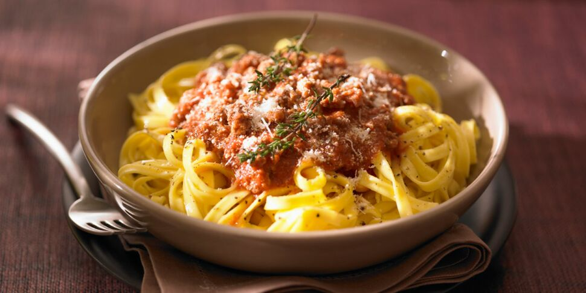

Bolognaise

sauce tomate italiene à base de boeuf
Liste des ingrédients
- 250g de tagliatelles
- 300g de boeuf haché
- 1 gros oignon
- 2 gousses d'ail
- Coulis de tomates
Etapes de préparation
- Faites chauffer l'huile dans une sauteuse et mettez-y à revenir la viande avec les oignons et l'ail épluchés et hachés.Mélangez bien et, dès que l'ensemble se colore légèrement, ajoutez les tomates concassées ainsi que le jus de leur boîte, le concentré de tomates et le bouquet garni.
- Laissez mijoter quelques minutes, en remuant, puis mouillez avec le vin rouge. Salez, poivrez et ajoutez le sucre. Couvrez et laissez cuire 20 min à feu doux.
- Pendant ce temps, faites cuire les pâtes dans beaucoup d'eau bouillante salée de 7 à 12 min, selon les indications du paquet.
- Versez les pâtes égouttées dans un plat creux préalablement chauffé. Ajoutez le beurre et mélangez aussitôt.
- Nappez de la sauce bolognaise puis saupoudrez-la du parmesan et du persil haché.
- Servez aussitôt et mélangez au dernier moment, à table.
Retour à la page principale